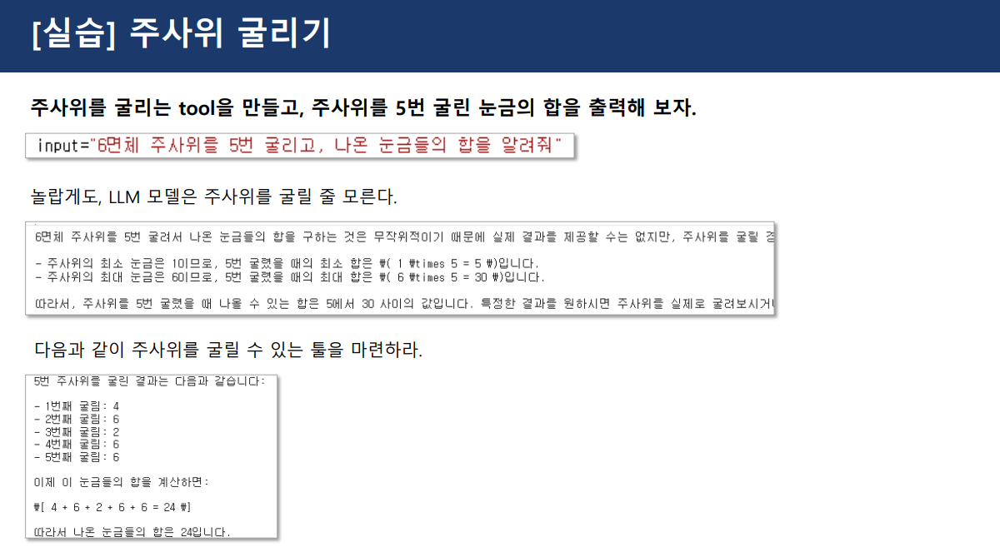
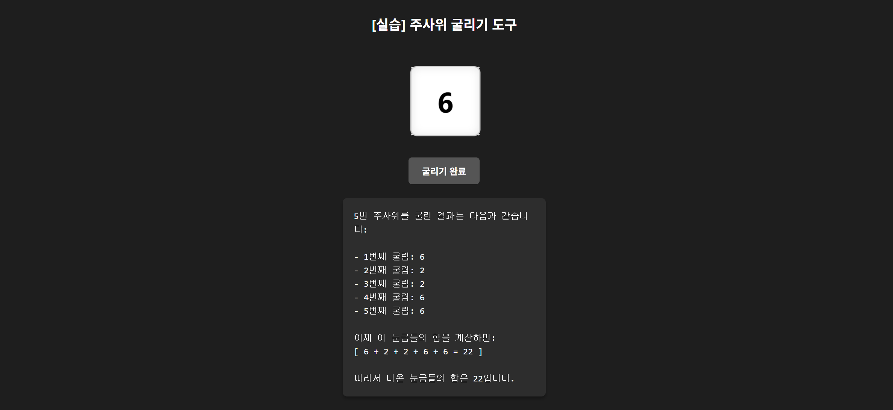
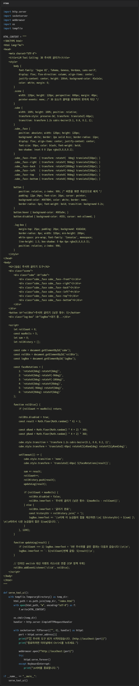
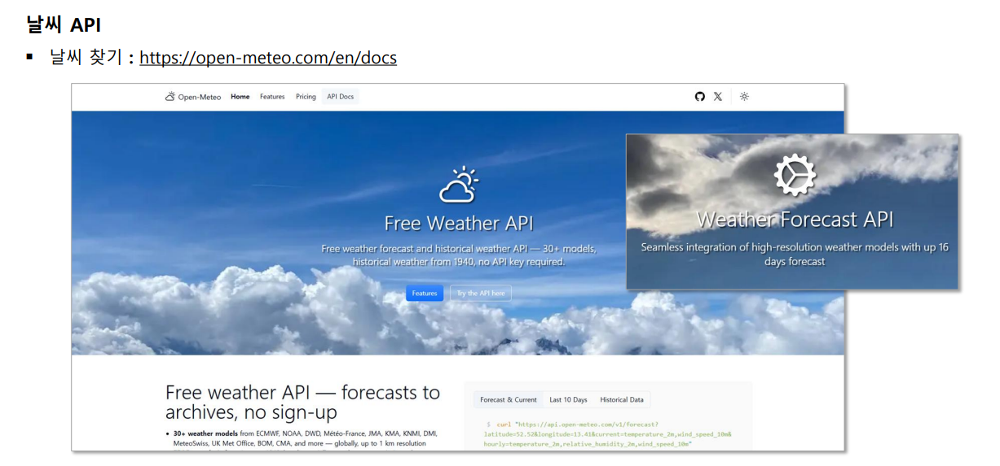
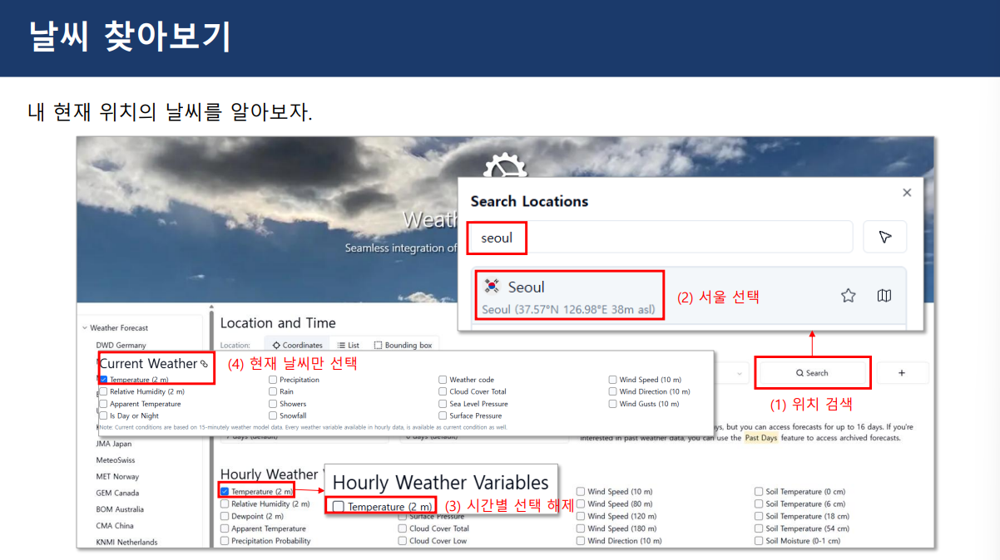
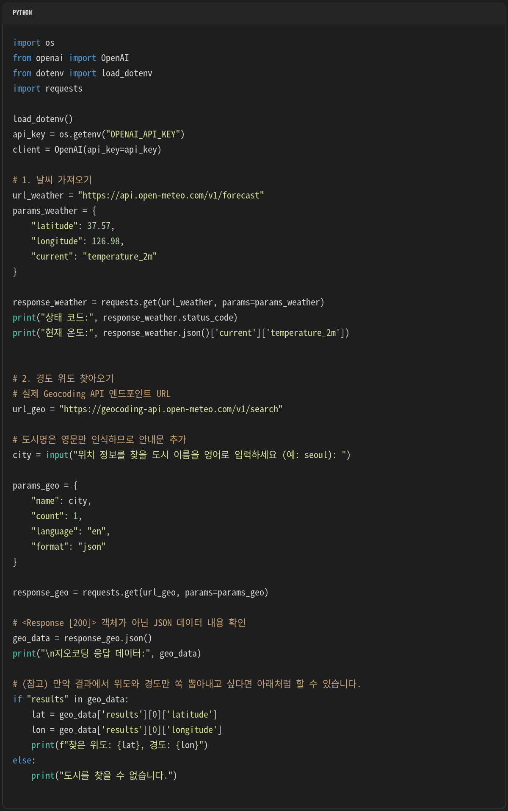
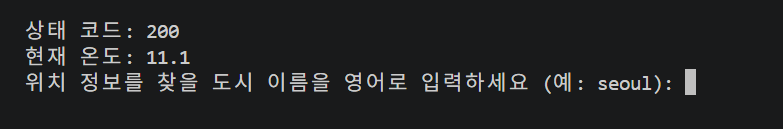
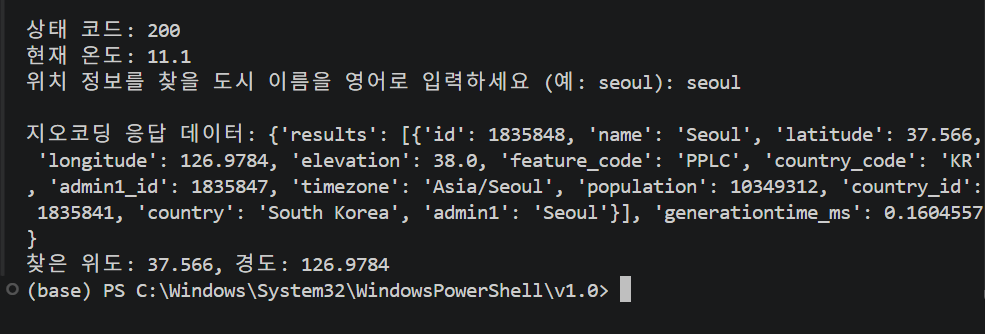
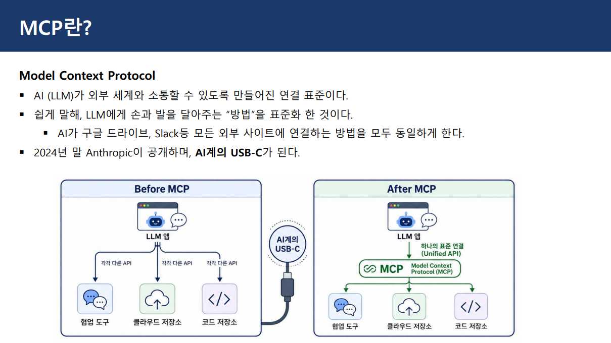

1. Tool&MCP
A. Tool Calling (도구 호출)
a. 주사위 굴리기 문제

b. 주사위 굴리기 결과

c. 주사위 굴리기 코드
▸ 코드 접어두기

PYTHON 코드
B. Requests (외부 API 호출하기)
a. 날씨 API 호출하기 문제


b. 날씨 API 호출하기 코드
▸ 코드 접어두기

PYTHON 코드
c. 날씨 API 호출하기 결과


C. MCP (Model Context Protocol)

MCP(Model Context Protocol)의 개념
인공지능(LLM)이 구글 드라이브, 슬랙, 코드 저장소 등 외부 세계와 소통할 수 있도록 연결 방식을 하나로 통일한 연결 표준 규격입니다. 2024년 말 Anthropic이 공개했으며, 다양한 규격을 하나로 통일했다는 점에서 'AI계의 USB-C'라고 불립니다.
등장 배경 및 효과
이전에는 AI 앱이 각 외부 서비스마다 각각 다른 API를 개별적으로 연결해야 했습니다. 하지만 MCP 도입 후에는 하나의 표준화된 연결(Unified API)로 모든 외부 기능에 접근할 수 있게 되었습니다. 마치 스마트폰에 앱을 다운로드하듯, AI 모델은 그대로 두고 개발자들이 만들어둔 여러 기능(MCP Server)을 쉽게 가져다 붙일 수 있어 도구의 재사용성과 확장성이 매우 높아졌습니다.
주요 아키텍처
MCP는 크게 3가지 역할로 나뉘어 JSON-RPC 2.0 방식으로 통신합니다.
- Host: 사용자가 현재 사용 중인 AI 애플리케이션(예: ChatGPT 서비스)입니다.
- Client: Host 내부에서 동작하며 하나의 서버와 1:1 연결을 관리합니다.
- Server: 파일 시스템, 데이터베이스, 외부 API 등 실제 기능을 제공하는 프로그램입니다.
Tool Calling과의 관계
Tool Calling이 LLM이 외부 도구를 호출하는 '메커니즘(행위)'이라면, MCP는 그 도구를 LLM에게 제공하기 위한 '표준 연결 규격(방법)'입니다. 하나의 프로젝트에서만 간단히 쓸 때는 Tool Calling이 적합하지만, 여러 AI 앱에서 동일한 도구를 중앙 관리하며 재사용할 때는 MCP를 사용하는 것이 효율적입니다.
D. Remote MCP와 Connector
Remote MCP와 Connector(커넥터)는 복잡한 코드를 처음부터 짜지 않고도, 아주 간단한 문법만으로 GPT 모델에게 강력하고 새로운 외부 기능을 추가해 주는 방법들입니다.
초보자분들이 이해하기 쉽게 두 가지의 특징과 차이점을 요약해 드릴게요.
1. Connector (커넥터)
- OpenAI가 직접 유지하고 관리해 주는 '미리 만들어둔 연결 어댑터(wrapper)'입니다.
- 구글 캘린더, 구글 드라이브, Gmail, 드롭박스, 마이크로소프트 팀즈 등 우리가 흔히 쓰는 유명하고 인기 있는 서비스들을 쉽게 연결할 수 있도록 제공됩니다.
- 복잡한 서버 설정 없이, 해당 서비스의 인증 권한(액세스 토큰)과 정해진
connector_id(예:connector_googlecalendar,connector_gmail등)만 적어주면 AI가 바로 내 캘린더를 읽거나 메일을 쓸 수 있게 됩니다.
2. Remote MCP (원격 MCP)
- 공용 인터넷상에 공개되어 있는 다른 사람의 MCP 서버(또는 내가 인터넷에 배포한 서버)를 직접 연결해서 사용하는 방식입니다.
- 커넥터처럼 문법이 아주 간단하여 쉽게 사용할 수 있습니다.
- 다만, 인터넷 주소인
server_url이 필수로 요구됩니다. 따라서 방금 전 실습처럼 내 컴퓨터(로컬)에만 만들어둔 MCP 서버는 이 방식으로 부를 수 없고, 인터넷에 배포(호스팅)를 완료해야만 원격으로 호출할 수 있습니다.
💡 요약하자면 (통신 방식의 차이)
- Local MCP (앞서 실습한 방식):
server.py같은 파일 이름을 사용해 같은 컴퓨터 안에서 데이터를 주고받습니다(stdio 방식). - Remote MCP:
https://...형태의 웹 주소를 사용해 인터넷(네트워크)을 통해 다른 컴퓨터와 데이터를 주고받습니다(HTTP 방식).